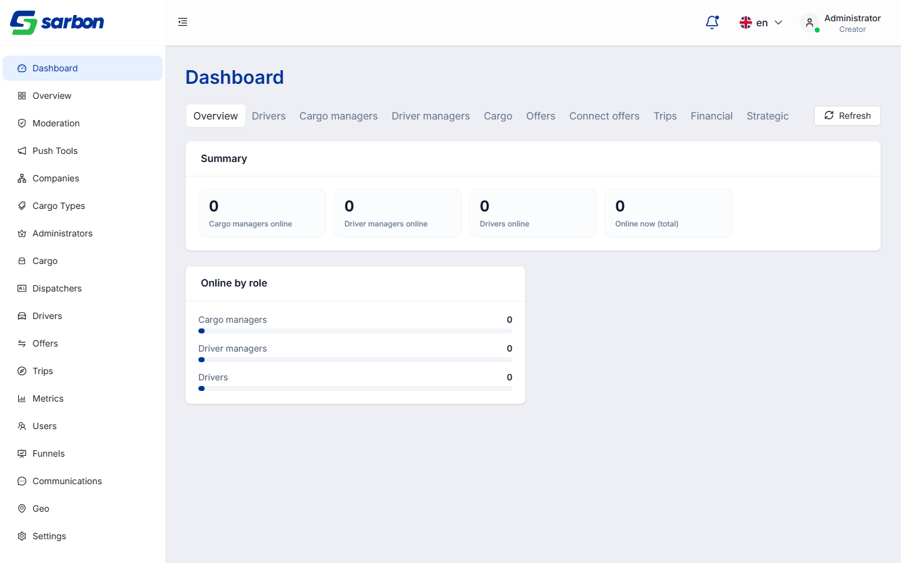
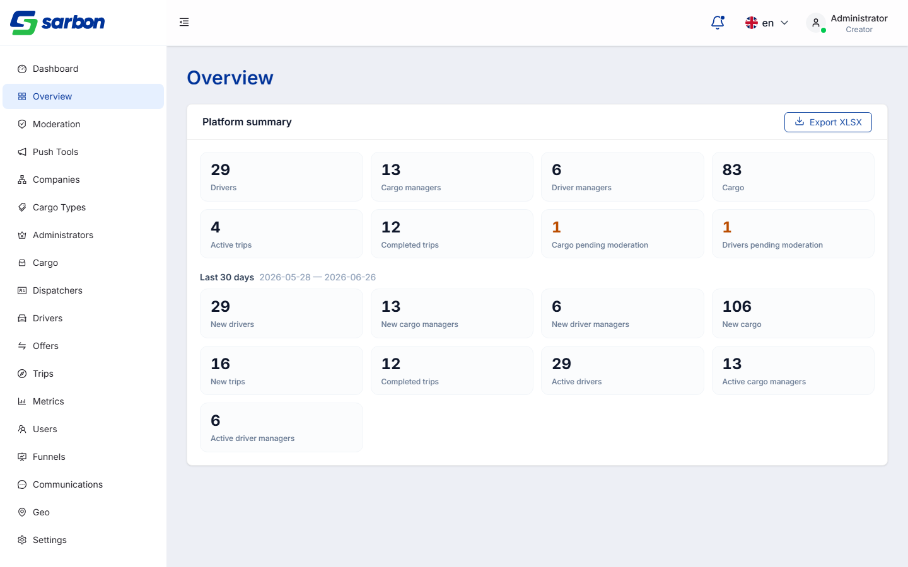
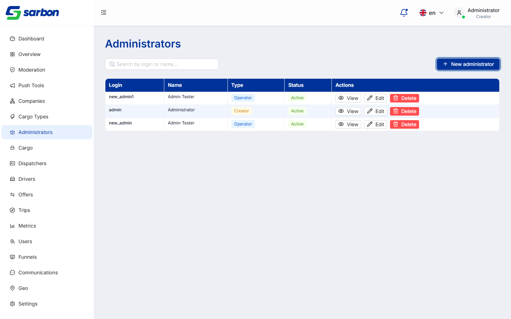
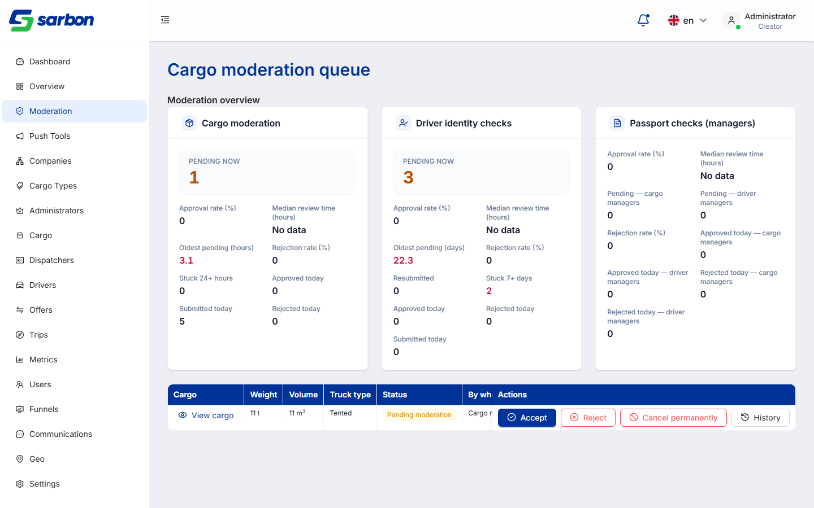
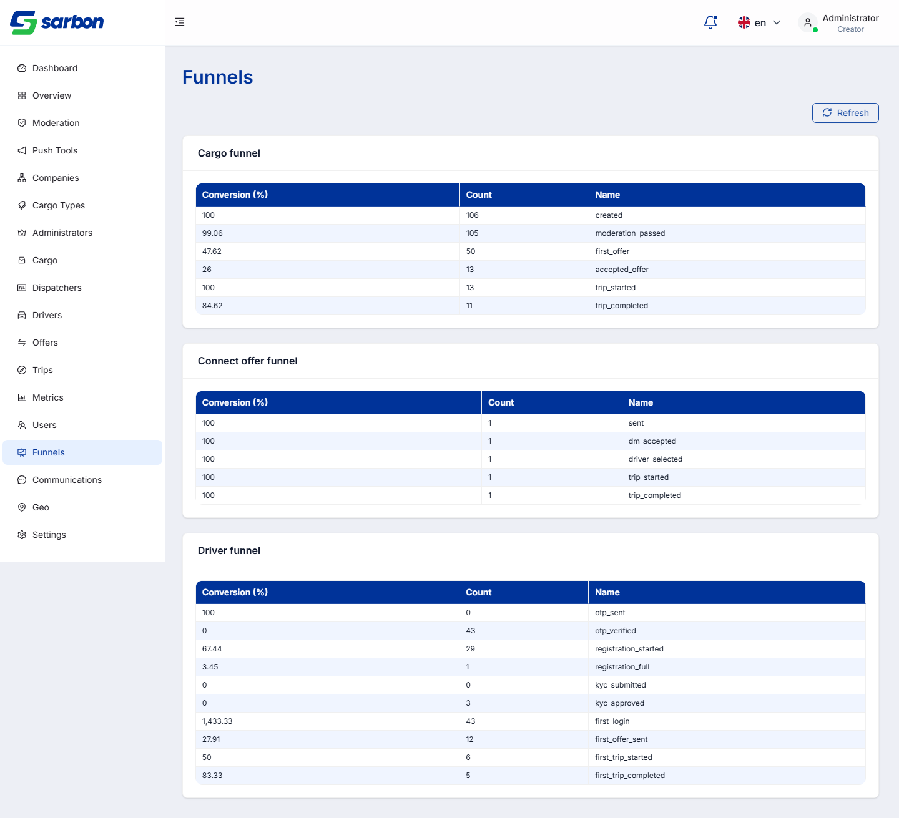
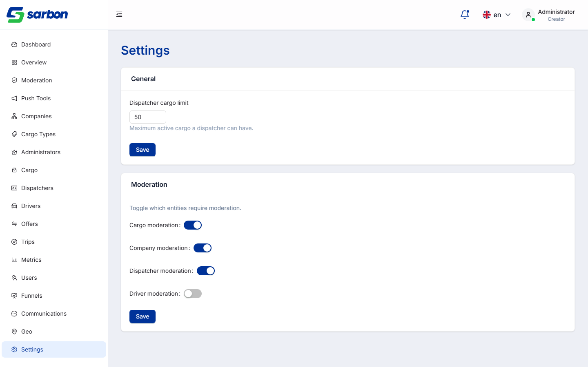
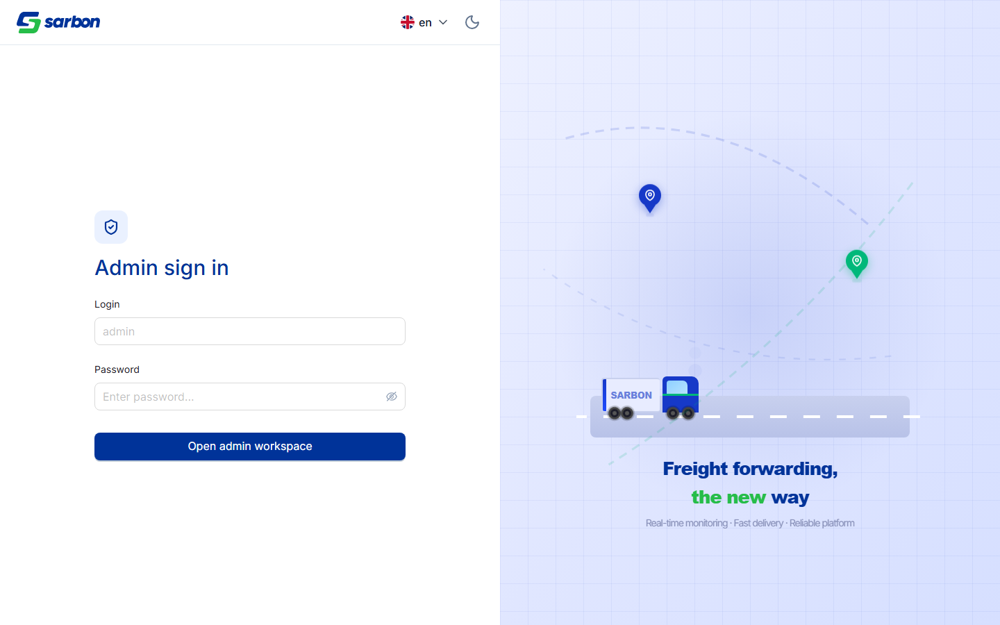
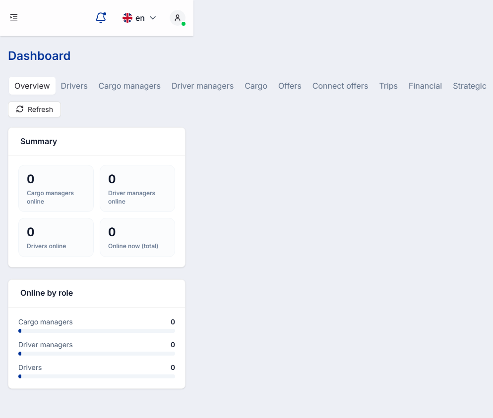
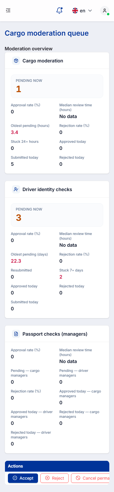
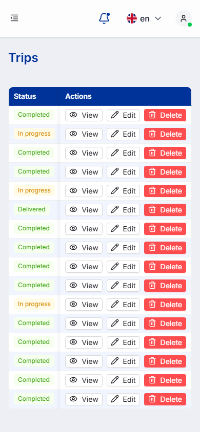

За 26.06.2026 завершена сборка административной консоли Sarbon: добавлено 9 новых страниц и общий аналитический движок, доработано и подключено к боевым эндпоинтам ещё 7 страниц. Проведены 3 сессии исправления багов (07 дефектов) и выполнен полный QA-прогон всех 18 страниц админки в двух разрешениях (десктоп + мобильный) — статический разбор кода, прогон в реальном браузере и визуальная проверка скриншотов. Сформирован интерактивный Allure-отчёт.
Все изменения находятся в рабочем дереве (ещё не закоммичены). Новые каталоги страниц и общие компоненты:
| Страница | Маршрут | Назначение | Где (файлы) |
|---|---|---|---|
| Обзор платформы | /admin/overview | Сводные показатели платформы (8 тоталов + 9 периодных метрик) и экспорт в XLSX. | src/pages/admin/overview/, components/shared/admin/AdminPlatformOverview.tsx, utils/adminXlsxDownload.ts |
| Типы груза | /admin/cargo-types | CRUD справочника типов груза (создание / редактирование / удаление, мультиязычные наименования). | src/pages/admin/cargo-types/ |
| Администраторы | /admin/admins | CRUD учётных записей админов: список с поиском и пагинацией, создание/редактирование/удаление, карточка-дровер, типы и статусы. | src/pages/admin/admins/ |
| Грузы | /admin/cargo | Реестр грузов: таблица + фильтры + детальный дровер. | src/pages/admin/cargo/ |
| Диспетчеры | /admin/dispatchers | Реестр диспетчеров: таблица + поиск + детальный дровер. | src/pages/admin/dispatchers/ |
| Водители | /admin/drivers | Реестр водителей: таблица + поиск + детальный дровер. | src/pages/admin/drivers/ |
| Офферы | /admin/offers | Реестр офферов: таблица + фильтры + детальный дровер. | src/pages/admin/offers/ |
| Рейсы | /admin/trips | Реестр рейсов: таблица + фильтры + детальный дровер, редактирование и удаление. | src/pages/admin/trips/ |
| Настройки | /admin/settings | Общие настройки (лимит грузов диспетчера) и переключатели модерации (cargo/companies/dispatchers/drivers). | src/pages/admin/settings/ |
| Компонент | Что делает |
|---|---|
| AdminAnalyticsHub.tsx | Вкладочный (segmented) контейнер аналитики: на каждую вкладку — свой запрос к /v1/admin/analytics/* с кэшем и кнопкой «Обновить». |
| AdminAnalyticsView.tsx | Универсальный рендер ответа: totals → плитки KPI, breakdown → полосы/таблицы, top → таблицы-лидерборды. |
| AnalyticsMetricCard.tsx · analyticsMetricUtils.ts | Карточка метрики (hero-значение + список метрик) и форматирование значений. |
| adminHelpers.ts → buildDynamicColumns | Динамическая генерация колонок таблиц из данных API (с правилами скрытия служебных колонок). |
| Страница | Маршрут | Что подключено |
|---|---|---|
| Дашборд | /admin/dashboard | Аналитический хаб — 10 вкладок (Обзор, Водители, Карго-менеджеры, Менеджеры водителей, Грузы, Офферы, Connect-офферы, Рейсы, Финансы, Стратегия). |
| Пользователи | /admin/users | Аналитика участников (3 вкладки). |
| Метрики | /admin/metrics | Аудит-таблицы (segmented-вкладки). |
| Воронки | /admin/funnels | 3 таблицы воронок (конверсия / количество / этап). |
| Коммуникации | /admin/communications | Аналитика коммуникаций (segmented). |
| Гео | /admin/geo | Геоаналитика (таблицы). |
| Модерация | /admin/moderation | Очередь модерации + карточки аналитики; действия: принять / отклонить / отменить / история. |
Также затронуты: маршрутизация и гард-доступы (src/router/RootRouter.tsx, paths.ts, router/admin/AdminRouteGuards.tsx), навигация админ-лейаута (layouts/admin-layout/AdminLayout.tsx), эндпоинты и ключи запросов (constants/endpoints.ts, queryKeys.ts) и локализация во всех 15 языках (public/locales/*.json).






Все исправления внесены 26.06.2026 и занесены в bug.md (корень репозитория). Сборка типов tsc -b — чистая, линтер eslint --max-warnings 0 — без предупреждений.

Тестировалась вся админ-консоль — 18 страниц + логин, все секции, вкладки, модальные окна и дроверы, таблицы, фильтры, формы и пагинация. Прогон неразрушающий: реальные create / edit / delete / send не отправлялись (каждый шаг сценария проверялся по исходникам до запуска).
Полный отчёт: qa/reports/qa-report-2026-06-26-admin-full.md. Также за день: qa-report-2026-06-26-admin-api-wirings.md, qa-admin-dashboard-moderation-2026-06-26.md, qa-admin-tools-endpoints-2026-06-26.md.
| Источник | Crit | High | Medium | Low | Info | Итого |
|---|---|---|---|---|---|---|
| Статический разбор | 0 | 4 | 41 | 75 | 26 | 146 |
| Визуальная проверка | 0 | 6 | 17 | 29 | 15 | 67 |
Два источника подтверждают друг друга: находки об «утечке id» и «сырых enum» подтверждены и в коде, и на скриншотах. После дедупликации 213 замечаний сводятся к 5 системным первопричинам — исправление каждой закрывает сразу множество страниц.
| Страница | Сев. | Замечание |
|---|---|---|
| push | High | Сбой статуса → зелёный бейдж «Все системы исправны» (S2) |
| admins / cargo-types / moderation | High | Сбой GET списка → «пусто» без повтора (S2) |
| dashboard | High | Панель 10 вкладок вызывает горизонтальную прокрутку на мобильном; дальние вкладки недостижимы (S1) |
| moderation · cargo-types · dispatchers · drivers · trips · metrics | High | Таблицы выходят за экран мобильного — колонки/кнопки пропадают или обрезаны (S1) |
| dashboard | Medium | 12 из 18 меток KPI «Обзор» отсутствуют в словаре → откат на англ. prettifyKey |
| dashboard | Medium | Проценты (*_pct) и валюта (revenue_*) выводятся как голые числа — без знака % / валюты |
| login | Medium | При отсутствии типа от бэкенда type по умолчанию = creator (самый привилегированный) — «fail-open» |
| offers | Medium | Время выводится через formatDateTimeIsoClock (UTC показано как локальное, без TZ) |
| funnels | Medium | Бессмысленные значения конверсии (first_login = 1 433,33%) — данные воронки немонотонны, выводятся сырыми (вероятно, бэкенд) |
| settings | Medium | Поле лимита принимает дробные числа, без валидации |
Полный список Low/Info (75+29 и 26+15) — в постраничных файлах qa/_admin_specs/<page>.json и <page>.visual.json. Отдельно: 74 предупреждения консоли — это устаревшие пропсы AntD 6 (Drawer width, Space direction), они не ломают работу, но желательно убрать одной правкой.
Таблицы и панель вкладок выходят за пределы экрана телефона — колонки и кнопки действий пропадают или обрезаются.



Прогон браузера сведён в локальный интерактивный Allure-отчёт «Sarbon Admin Console — Full QA»: 314 скриншотов (десктоп против мобильного) + логи консоли/сети/ошибок по каждой странице.
| Артефакт | Путь |
|---|---|
| Полный QA-отчёт админки | qa/reports/qa-report-2026-06-26-admin-full.md |
| Постраничные находки (статика) | qa/_admin_specs/<page>.json |
| Постраничные находки (визуал) | qa/_admin_specs/<page>.visual.json |
| Скриншоты + логи прогона | qa/runs/2026-06-26T12-11-40/ |
| Allure-отчёт (served) | allure-report/ → http://localhost:8800 |
| Конфиг прогона (18 страниц) | qa/qa-run.json |
| Проектный мост Allure | qa/allure-from-run-filtered.mjs |
| Журнал исправлений | bug.md (записи 15:21 · 15:53 · 18:23) |
| Реестр покрытия тестами | qa/test-ledger.json (19 поверхностей) |
При сверке git-диффа дня с отчётом обнаружены изменённые области, которые не были задокументированы. Добавлены ниже (текстовая доработка отчёта, без скриншотов).
Полный дифф дня — 109 файлов (в первой версии отчёта указывалось «36»).
| Область | Значимость | Файлы / коммит |
|---|---|---|
| Редизайн страницы AdminLoginPage (framer-motion анимации входа, бейдж ShieldCheck, рестайл заголовка/полей/кнопки) + проп `langs` у LangSelect (ограничение видимых языков на этой странице) | мелкое | AdminLoginPage.tsx (+77/-24), LangSelect.tsx (+14) — в отчёте упомянут только фикс console-error, не сам редизайн |